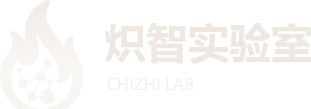
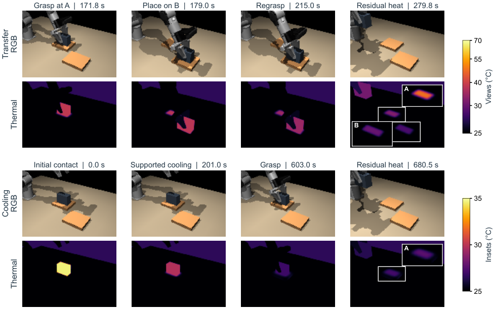

月面装配
受照角热胀后无法装入，局部喷冷后再次试装。
面向温度的机器人精细操作仿真器


工件移开，余热仍在。下一次接触面对的是已经改变的热状态。
从装配、加工到维修，看热状态如何限制一次操作。
受照角热胀后无法装入，局部喷冷后再次试装。
焊缝间隙和散热条件变化，调整热输入与进给。
背面散热拖慢升温，提高热风档位后再取件。
通电找热点，换件后再次上电检查。
剪带后仍受阻，局部加热后以相同限力复试。
面向精细操作、工艺调试与策略测试，把热物理过程和交互数据接入机器人训练。
徐凯等《面向柔性制造的具身智能综述》将工业级数据平台与高性能高保真物理仿真器列为重要挑战。TRR 从热与接触切入，为这两类基础设施提供可集成的仿真与数据组件。
模拟机器人、工件和支撑之间的接触传热，保留操作留下的热历史。作为工业仿真平台的热物理场子系统，为工艺调整与策略验证提供可复现环境。
同步生成 RGB、温度、动作轨迹与任务结果，支持数据检查、模型调优和策略评估。可用于私有或定制场景的数据生产，接入现有数据平台与数采流程。
模块化接入：TRR 提供热交互仿真、数据生成与验证组件；跨企业共享、访问控制、隐私保护等数据治理由所接入的平台承接。
设置材料、温场、工件与机器人。
让动作与热状态共同推进。
对齐图像、温度、动作与任务结果。
复现场景、调整条件、检查操作表现。

从热交互出发，逐步加入更多物理、化学过程的仿真，扩展焊接、打磨、装配与维修等生产作业训练。
让机器人在变化的材料、工况和工艺条件下练习操作，积累作业数据，评估过程与结果。
Biwen Yang、Zhe Cao、Jin Zhang、Haoyang Sun、Zonglu Hu、Jintao Zhao、Zhehao Zhang、Kaizheng Chen、Chengyi Liu、Chengyu Wei、Siyuan Wu、Ruiheng Zhang
北京理工大学 · 炽智实验室 · 通讯作者：Ruiheng Zhang